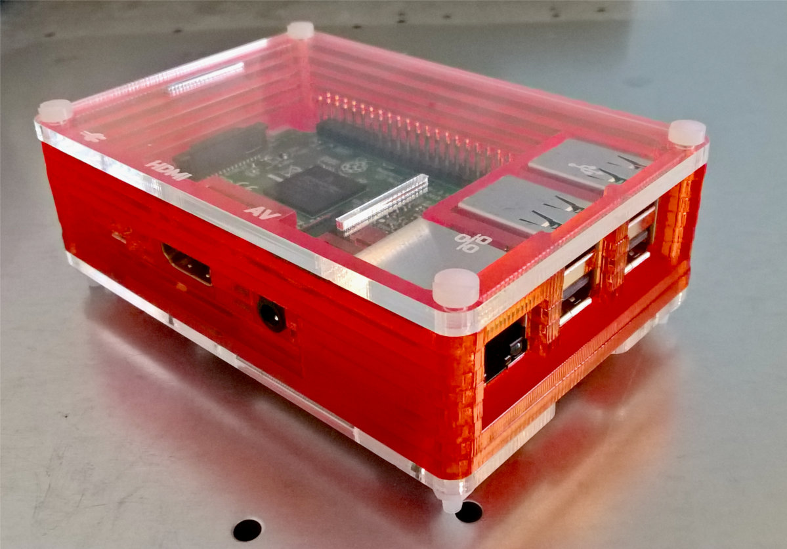
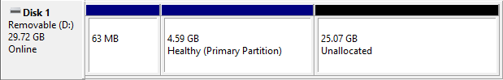

I've only recently managed to get my hands on a
Raspberry Pi, which was really popular at my university and the local hackspace. The credit card-sized board houses an ARM v8 quad-core processor, 1GB memory, a wireless interface and plenty of USB ports. More than enough to function as a desktop with a minimal Linux installation.
As you can see, the Pi has a set of GPIO pins along the side for hardware and I/O programming, though I think an Arduino board is more suitable for learning that kind of thing.

I've housed the Pi in a
PiBow Tangerine case, which ModMyPi sells for ~£12. Since I hadn't gotten around to completing my desktop build, I had to order a few extras from ModMyPi and Farnell Components - both pretty good suppliers.
One of these is an official power supply, as it requires a 5v adaptor capable of supplying 2.5A. ModMyPi sells these for ~£7. I wouldn't recommend attaching anything fancy through the USB ports or attaching multiple hubs, as that could draw enough current to fry part of the board. I've seen that happen with laptops a couple of times.
microSD Card and Operating System
The Pi will automatically load whatever operating system is discovered on the inserted microSD card, so it's easy to switch between them by swapping cards. Alternatives to the recommended Raspbian OS include Debian, PwnPi, Ubuntu MATE and several distributions that can turn the Pi into a media centre.
Whichever operating system is chosen, I recommend using a microSD with at least double the recommended capacity. It's likely more space would be required for extending and customising the installation. There'll also be personal files you'd want to keep on the same volumes as the root file system. Another potentially important factor is the data transfer rate for the microSD, as that could be a bottleneck, and therefore the operating system would ideally be installed on a microSDHC card.
If installing
Ubuntu MATE, the first step is to download the version specifically for the Pi, and this will be a
.xz archive from which the
.img file is extracted. This image file is then 'burned' to the microSD card. I've used 7-Zip and
Etcher, as recommended in the
official Pi documentation,.
Since there is no swap partition on the microSD, the 1GB of physical memory won't be extended. That would also mean the hibernation feature wouldn't work. If the memory proves too limited for the MATE desktop, we could install XCFE and configure that as the default in the .xsession file Another option is to disable X11 using '
raspi-config' - almost every desktop application has a decent command line substitute.
Well, that was my plan, but I wasn't initially able to get this operating system running on the Pi, as it apparently couldn't find the partition for the root file system. I kept getting the following error message:
Kernel panic-not syncing: VFS: unable to mount root fs on unknown-block(179,2)
I've come across this error before, when I had a multi-boot system spanning several hard drives. The kernel is attempting to create or read a file system on a non-existent volume.
I managed to pin this down (I think) to a configuration line in '
command.txt', which has either an incorrect partition number or incorrect filesystem set. Multiple times I swapped the microSD between my laptop and the Pi, trying to find the correct values by trial-and-error (e.g.
root=/dev/mmcblk0p2 instead of
root=/dev/mmcblk0p6).
The problem was I created a partition table on the card
before flashing it, not realising the Ubuntu MATE image will create the partitions on unallocated space anyway. To fix this, remove all partitions on the card using the Windows Disk Management application, so the entire 30-32GB is unallocated and flash the card again using Etcher. Disk Management should display the following partition scheme after flashing and verification:

Note, the boot partition (~5GB) is marked as primary. The third partition is unallocated, and this is where the root file system is created.
Links
CPC. 2018. Introducing the NEW Raspberry Pi 3 Model B.
Maker Space. [WWW].
http://cpc.farnell.com/mksp2-raspberry-pi3. (9th February 2018).
MODMYPI. 2018. Tangerine PiBow Raspberry Pi Case - Model B+/2/3.
Raspberry Pi B+,2 & 3 Cases. [WWW].
https://www.modmypi.com/raspberry-pi/cases-183/raspberry-pi-b-plus2-and-3-cases-1122/plastic-cases-1142/tangerine-pibow-raspberry-pi-case-model-b-plus-and-2/?search=tangerine. (9th February 2018).
RASPBERRY PI FOUNDATION. 2018. INSTALLING OPERATING SYSTEM IMAGES.
Documentation, Installing Images. [WWW].
https://www.raspberrypi.org/documentation/installation/installing-images/. (9th February 2018).
RESIN.IO. Etcher. [WWW].
https://etcher.io/. (9th February 2018).
UBUNTU MATE TEAM. 2018. Ubuntu MATE for the Raspberry Pi 2 and Raspberry Pi 3. [WWW].
https://ubuntu-mate.org/raspberry-pi/. (9th February 2018).